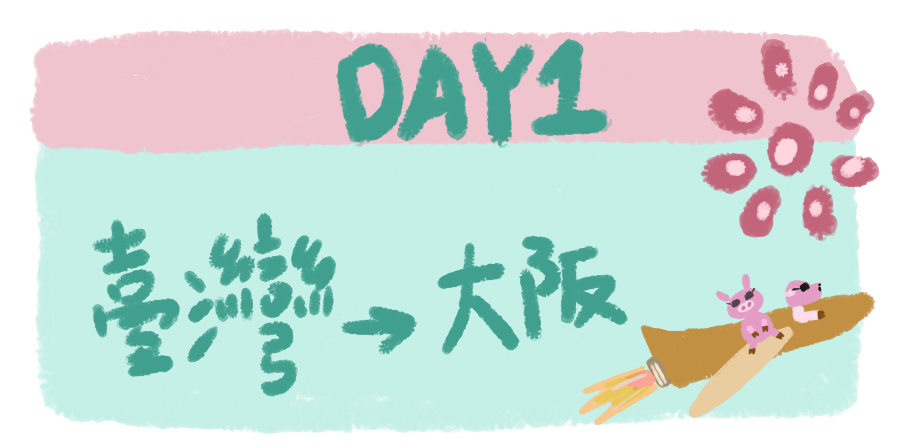
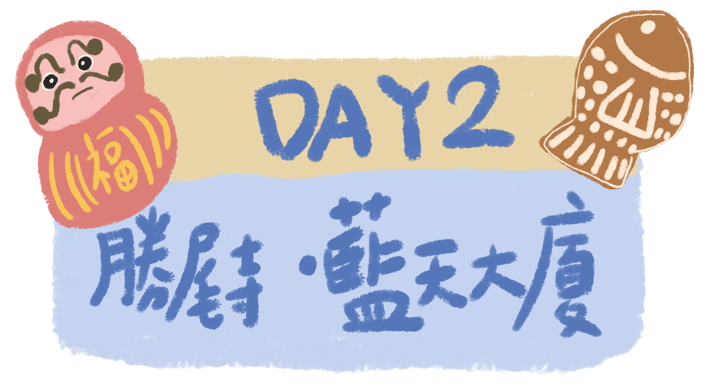
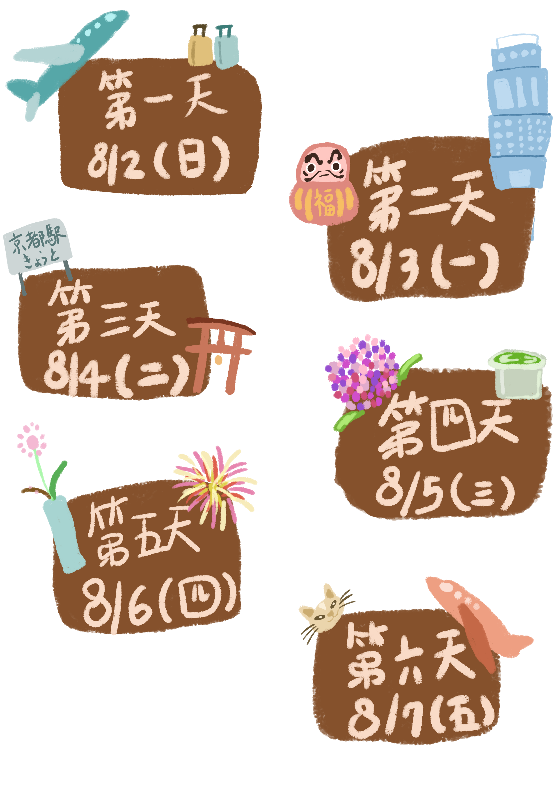

Osaka / Kyoto Trip
大阪京都旅行封面
Before Takeoff
出發前確認這些都在隨身包包，不可以放行李箱哦！
Taste & Play Log
遊樂清單
吃到就打勾，再留下你的豬豬評分。


第一天 8/2(日)
臺灣出發，前往大阪
第二天 8/3(一)
勝尾寺 & 梅田藍天大廈
大阪日航酒店 → 勝尾寺
6:40 出發，走路3分鐘
搭 6:45、6:49 或 6:52 的電車
御堂筋線：心齋橋駅 → 箕面萱野駅，約 40 分鐘
箕面萱野駅 → 計程車約 20 分鐘 → 勝尾寺
勝尾寺 → 大阪梅田
搭計程車下山
御堂筋線： 箕面萱野駅 → 大阪方向 → 梅田駅走路去藍天大廈。
梅田 → 丸美衣料 太子店
御堂筋線：梅田駅 → 動物園前駅
走路去丸美衣料太子店。
店家 19:30 關門，要留意時間。
要整理好行李，明天早上要拿給櫃檯
第三天 8/4(二)
下鴨神社、錦市場與伏見稻荷
大阪日航酒店 → 下鴨神社
御堂筋線：心齋橋駅 → 淀屋橋駅
京阪本線 特急：淀屋橋駅 → 出町柳駅
出町柳駅步行約 10 分鐘 → 下鴨神社
下鴨神社 → 錦市場
京阪本線：出町柳駅 → 祇園四條駅
步行約 10 分鐘。
錦市場
不可以邊走邊吃的吃吃喝喝，我想吃章魚燒ㄛ
錦市場 → 伏見稻荷大社
京阪本線：祇園四條駅 → 伏見稻荷駅
步行約 5 分鐘。
伏見稻荷大社
走訪千本鳥居。
伏見稻荷 → 京都高島屋
走路回伏見稻荷駅
京阪本線（出町柳方向）至祇園四條駅。
祇園四條駅再步行約 5 分鐘。
京都高島屋
逛街與休息。
京都高島屋 → 光芒酒店 京都烏丸六角
步行至京都河原町駅
阪急京都線：（大阪梅田方向）京都河原町駅 → 烏丸駅
步行約 8 分鐘 → 飯店
酒呑気 びんご
從飯店步行約 7 分鐘。
第四天 8/5(三)
楊谷寺、京都車站與宇治
光芒酒店 京都烏丸六角 → 楊谷寺
阪急京都線：（大阪梅田方向）烏丸駅→ 長岡天神駅
計程車 → 楊谷寺
楊谷寺
欣賞花手水。
楊谷寺 → 京都駅
計程車 → 長岡京駅。
JR 京都線：（京都方向）長岡京駅 → 京都駅
京都駅
逛大型百貨公司、找餐廳用餐。
京都駅 → 平等院
JR 奈良線：（城陽方向）京都駅 → 宇治駅
宇治駅步行約 10 分鐘 → 平等院
平等院 → 光芒酒店 京都烏丸六角
JR 奈良線：（京都方向）宇治駅 → 京都駅
烏丸線：轉乘 （國際會館方向）→ 烏丸御池駅
步行約 5 分鐘 → 飯店
回程沿路走走，看看有什麼好吃的。
第五天 8/6(四)
六角堂插花 & 琵琶湖煙火大會
光芒酒店 京都烏丸六角 → 六角堂
從飯店步行約 2 分鐘。
六角堂 → 琵琶湖濱大津
步行約 7 分鐘至烏丸御池駅。
東西線：列車直通 京阪京津線 → 琵琶湖濱大津駅，中途不用下車。
琵琶湖濱大津 → 光芒酒店 京都烏丸六角
京阪京津線：（太秦天神川方向），直通 東西線 → 烏丸御池駅
走路 5 分鐘 → 飯店
第六天 8/7(五)
肥家
光芒酒店 京都烏丸六角 → 關西機場
06:40 左右退房
飯店搭計程車約 10 分鐘 → 利木津巴士乘車處 H2
日本〒601-8003 Kyoto, Minami Ward, Higashikujo Nishisannocho
搭利木津巴士前往關西機場。
應該是這三班其中一班6:50、7:05 或 7:20；最晚不要超過 7:40。
關西國際機場（KIX）→ 桃園國際機場（TPE）
Select A Date
